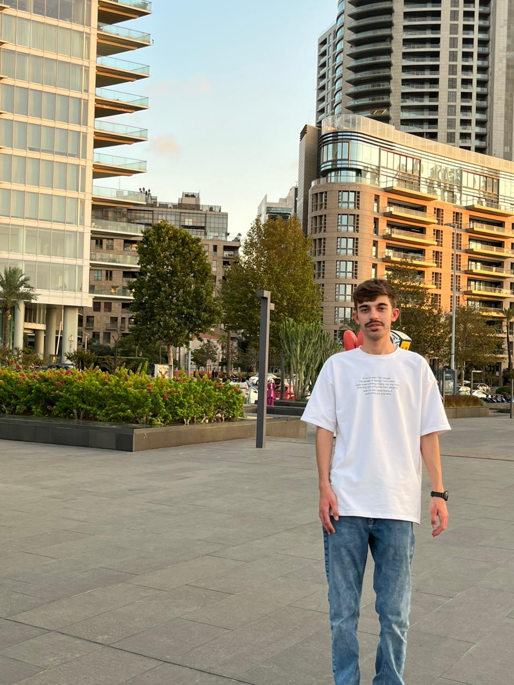

Mahmoud Mohannad Ahmad Turadat, Cybersecurity | third year

| Skill / Tool | Official Website |
|---|---|
| Wireshark | wireshark.org |
| Metasploit | metasploit.com |
| Linux | linux.org |
Email me at: mmturadat23@cit.just.edu.jo
In four years, I envision myself as a skilled cybersecurity professional, specializing in penetration testing and cloud security. I aim to work with top-tier security teams to protect critical systems and sensitive data. I also plan to obtain advanced certifications and pursue postgraduate studies in cybersecurity. Hands-on experience in digital forensics and threat analysis will allow me to contribute effectively to the field. Continuous learning and collaboration with industry experts will help me develop innovative security solutions.